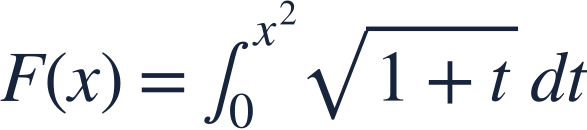
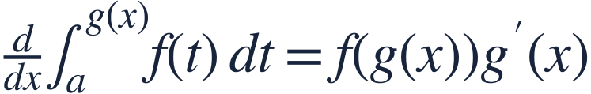
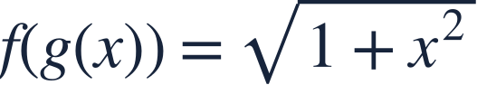
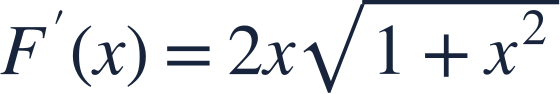
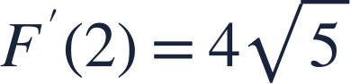
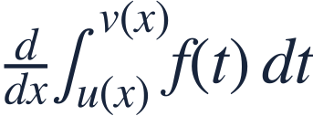
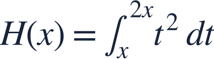

Differentiating variable bounds
변수 적분구간의 미분

A moving integration endpoint adds a chain-rule factor.
적분 끝점이 함수로 움직이면 연쇄법칙의 인수가 붙습니다.

A moving integration endpoint adds a chain-rule factor.
적분 끝점이 함수로 움직이면 연쇄법칙의 인수가 붙습니다.
The integrand is continuous for t≥0, covering every integration interval here.
피적분함수는 t≥0에서 연속이며 여기의 모든 적분구간을 포함합니다.

The endpoint determines the current height; its derivative determines how fast the endpoint moves.
끝점은 현재 높이를 정하고 그 도함수는 끝점이 움직이는 속도를 정합니다.

Replace the dummy variable t by the upper endpoint x².
적분변수 t를 위 끝점 x²으로 바꿉니다.

Multiply by the endpoint derivative.
끝점의 도함수를 곱합니다.

No explicit antiderivative is needed for this derivative.
이 도함수를 구할 때 원시함수를 직접 계산할 필요는 없습니다.

If both bounds move, subtract the lower-bound contribution as well.
양쪽 끝점이 움직이면 아래 끝점의 기여도 빼야 합니다.

Find H′(x).
H′(x)를 구하세요.